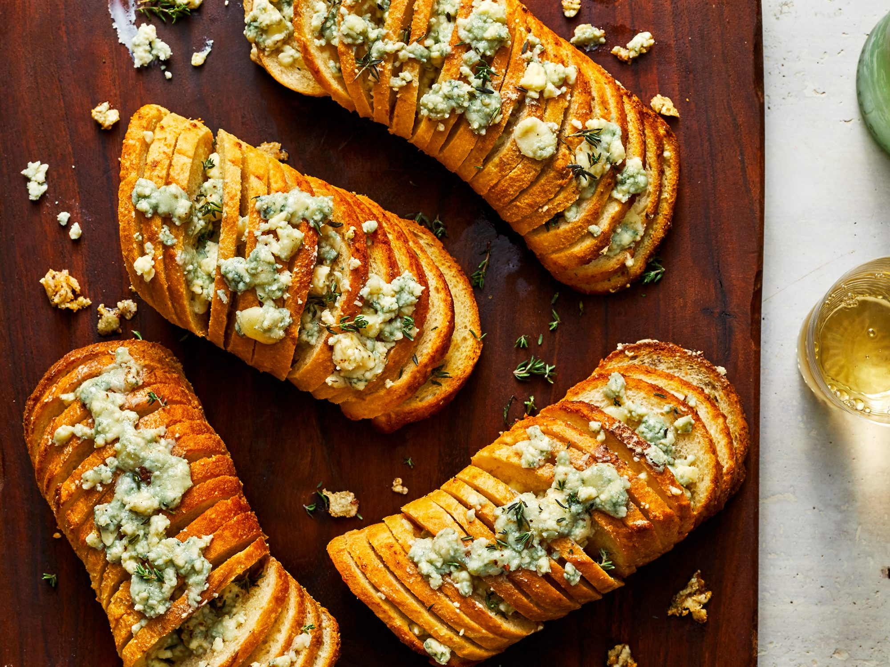

Hasselbaguette with Gorgonzola and Garlic Butter
There’s no doubt, you know as soon as you tear off a slice of this hasselback beauty that it’s the type of thing you shouldn’t eat more than once in a given calendar year. But that’s exactly why this recipe makes a great appetizer for holiday gatherings. You’ll definitely want to pick up a good quality baguette for this recipe in order to avoid having your bread disintegrate during its decadent butter bath.

Quick Facts
- Time: 30mins (15mins in the oven)
- Yields: 10 Slices
Ingredients
- 1 ½ cups salted butter (11 oz.)
- 6 garlic cloves, smashed
- 6 thyme sprigs, plus leaves for garnish
- 8 ounces Gorgonzola cheese, crumbled (about 2 cups), divided
- 1 (1-lb.) baguette
Directions
- Preheat oven to 375°F. Place butter, garlic, thyme sprigs, and 1 cup of the cheese in a saucepan over medium. Cook, stirring occasionally, until melted, 5 to 6 minutes. Remove from heat; let stand 10 minutes. Discard garlic cloves and thyme sprigs. Place butter mixture in a tall slender container (such as a pint glass).
- Preheat oven to 375°F. Place butter, garlic, thyme sprigs, and 1 cup of the cheese in a saucepan over medium. Cook, stirring occasionally, until melted, 5 to 6 minutes. Remove from heat; let stand 10 minutes. Discard garlic cloves and thyme sprigs. Place butter mixture in a tall slender container (such as a pint glass).
- Dunk each piece of bread into butter mixture, fanning out slightly to soak bread. Place bread on a rimmed baking sheet lined with aluminum foil. Bake in preheated oven until lightly toasted, 10 to 12 minutes; remove from oven. Top evenly with remaining 1 cup Gorgonzola crumbles. Bake at 375°F until cheese melts, 3 to 4 minutes. Place on a cutting board or serving platter. Sprinkle with thyme leaves.
No Nutritional Infro Available... Too Depressing :/